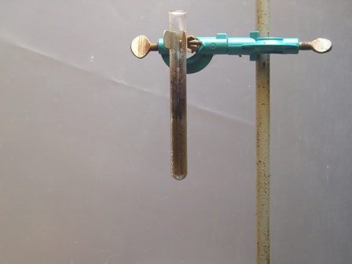
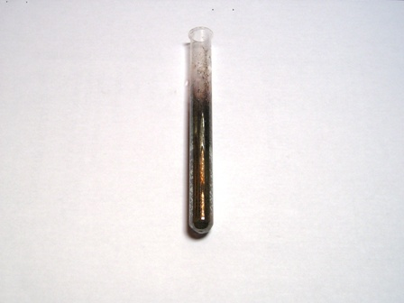
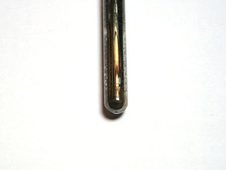

L'isopropilbenzaldeide, preparata, o meglio estratta, l'altra volta si presta perfettamente per un semplice e importante saggio della chimica organica analitica classica.
Il saggio in oggetto è merito di questo simpatico vecchietto dell'immagine a fianco, bellissima figura dello scienziato d'altri tempi: si tratta di Bernhard Tollens.
Di lui dirò solo che anch'egli fa parte di quella prolifica famiglia di chimici tedeschi dell'ottocento che costituiscono lo "zoccolo duro" della chimica di quel periodo e di conseguenza di quella poi a venire.
Dopo la laurea studò chimica presso il laboratorio di Wohler, dove pure lavoravano Rudolf Fittig e Friedrich Beilstein (il padre del famoso Handbuch der Organischer Chemie, più tardi divenuto il colossale Beilstein database, che raccoglie i dati praticamente di tutte le sostanze organiche conosciute).
Tollens fu anche collega di persone del calibro di Erlenmeyer (l'inventore della beuta!) e di Wurtz a Parigi; tornato negli anni '70 a Gottinga condusse importanti studi sugli zuccheri ed è proprio in questo periodo che mise a punto quel famoso reagente tutt'ora usato per la ricerca delle aldeidi.
Il reattivo di Tollens si prepara in questo modo (le quantità non sono critiche):
- aggiungere a 2 ml di una soluzione 0,1 M di AgNO3 1 ml di NaOH 1 M; si formerà un precipitato bruno di Ag2O.
- aggiungere ora goccia a goccia ammoniaca a media concentrazione, agitando ogni volta, finchè tutto il precipitato si scioglie perfettamente e la soluzione diventa limpida.
Non eccedere con l'ammoniaca.
La soluzione del complesso di argento che si ottiene é un debole ossidante.
Ag2O + 2NH3 + H2O ——> [Ag(NH3)2]+ + 2 OH-

La procedura
Aggiungere ad alcune gocce di campione circa 1 ml di reattivo. Agitare e riscaldare delicatamente.
In presenza di aldeide, questa si ossida ad acido e riduce l'[Ag(NH3)2]+ ad argento metallico che si deposita in parte sulle pareti della provetta formando un caratteristico specchio argentato secondo la reazione:
R-CHO + 2 [Ag(NH3)2]+ + 2 OH- —--> R-COOH + 2 Ag + 4 NH3 + H2O
Ho eseguito la prova del saggio di Tollens sulla cuminaldeide usando un paio di ml di reattivo e una goccia di campione estratto.
Riscaldando leggermente si forma un precipitato bruno di Ag metallico, che con riscaldamento ulteriore si trasforma in uno specchio, irregolare ma assolutamente inconfondibile.


Basta pochissima aldeide per far avvenire la reazione; ho provato con una frazione di goccia e la formazione dello specchio è ancora visibilissimo.

E' noto che il reattivo di Tollens va preparato al momento e non si può conservare perchè tende a formare, soprattutto in eccesso di ammoniaca e dopo reazioni intermedie, nitruro d'argento Ag3N.
Questo costituisce il famoso argento fulminante di Berthollet, sostanza esplosiva estremamente sensibile all'urto (da non confondere con un'altra sostanza dalle medesime caratteristiche ma di formula totalmente diversa, il fulminato d'argento Ag-O-N=C).